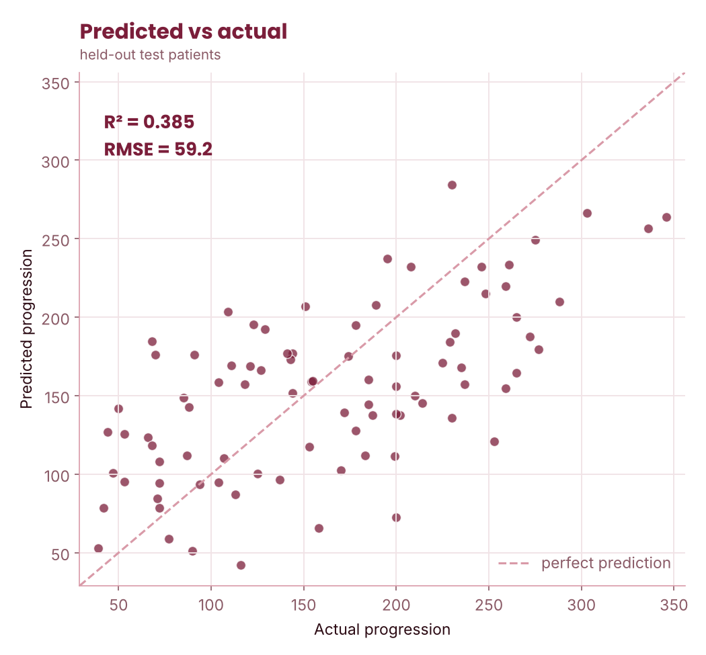
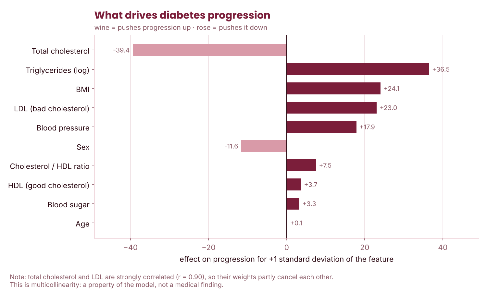
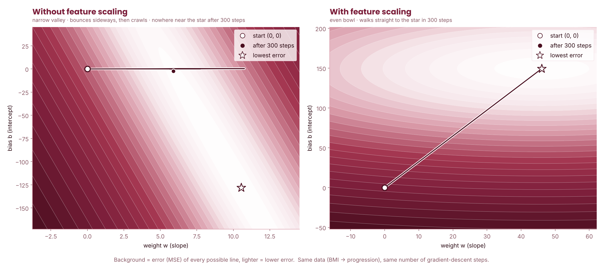
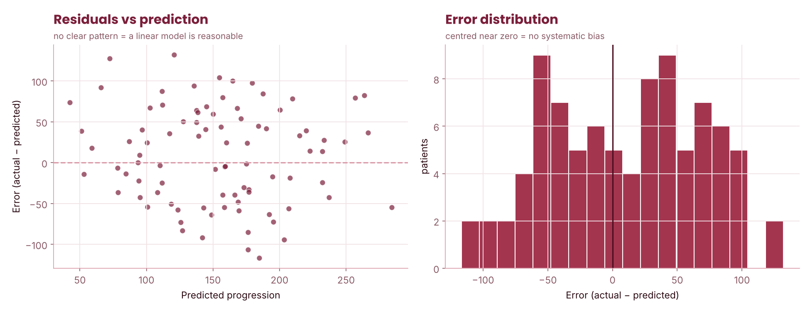

GlycoCast
Linear regression written from scratch in NumPy. It predicts how much a patient's diabetes will progress in one year from 10 baseline measurements (442 real patients).
Patient measurements
Predicted disease progression after 1 year
…
⚠️ Educational project, not a medical tool.
Watch gradient descent learn (BMI → progression)
Change the settings and see how the learning rate, number of steps and feature scaling change the path towards the best line.
💥 The learning rate is too big: the steps overshoot and the error explodes. Try a smaller one.




Sanity check
The model
prediction = w₁·age + w₂·sex + w₃·BMI + … + w₁₀·blood sugar + b
What I wrote by hand
- Loss: mean squared error, the average of (actual − predicted)².
- Gradients (calculus):
dL/dw = (2/n)·Xᵀ(ŷ − y)anddL/db = (2/n)·Σ(ŷ − y). - Gradient descent: start at 0 and take small steps downhill until the error stops falling.
- Normal equation: the exact one-shot answer
θ = (XᵀX)⁻¹Xᵀy. It matches gradient descent. - Ridge (L2) option to shrink weights when features are correlated.
- Feature scaling, train/test split, 5-fold cross-validation, and the R², RMSE and MAE metrics.
How this website works
- Backend (Python, FastAPI): loads the trained weights, makes predictions, runs gradient descent for the playground, and draws the charts with matplotlib.
- Frontend (this page): sends your inputs to
/api/predictand/api/playgroundand shows the answers. - Both are deployed together on Vercel, so the app never goes to sleep.